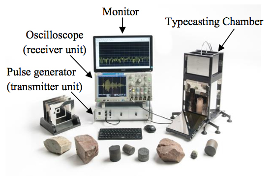

Adrok ADR Technology

Introduction
Adrok develops and uses advanced technology to supply geophysical services for locating, identifying and mapping subsurface natural resources (minerals, oil, gas and water). Adrok’s core technology is called Atomic Dielectric Resonance (ADR).
Atomic dielectric resonance (ADR) technology was developed by Dr Colin Stove, as an improvement over synthetic aperture radar (SAR) and ground penetrating radar (GPR) to achieve deeper penetration of the Earth’s subsurface and high vertical resolution through the creation and use of a novel type of coherent beam. ADR technology is faster, greener, cheaper and, an alternative to the conventional methods providing geophysical services.
ADR is used as a geophysical technique to provide a precision instrument for the accurate geological recognition of rock layers and identification of rock types by transmission through the rock medium as well as reflection from each subsurface rock layer1.
Adrok’s technology has been developed to provide data outputs relating to: (i) stratigraphy (like seismic imagery); (ii) information on rock characteristics (like well logs); and (iii) rock petrography (like cores). It measures subsurface (a) dielectric permittivity; (b) spectral (energy, frequency and phase) and (c) material resonance, from ground level, without physically boring the ground. These electrical measurements produce what Adrok has dubbed “Virtual Boreholes”.
Fundamentals of ADR Technology
Adrok’s proprietary Atomic Dielectric Resonance technology is based on the principle that different materials will reflect and absorb electromagnetic radiation (radio waves, microwaves) at specific frequencies and energy levels. The ADR geophysical system transmits a pulse of electromagnetic energy containing a multispectral (patented2) wave packet that resonates and reacts with the sub-surface materials. The reflections from the subsurface are recorded as a time domain trace and provide information about the location and composition of the materials encountered.
The transmitted ADR wave packet (see Figure 1 for an example) contains several frequency components in the range of 1-100 MHz where the low frequencies achieve deep penetration whereas the higher frequencies enhance vertical resolution3. When rocks of different compositions and textures have been exposed to ADR wave packets, a range of energy and frequency responses are detectable by suitable receivers. The recorded data describe how rocks and minerals, including hydrocarbons, interact with the electromagnetic radiation as it passes through them and pinpoints their composition. The technology measures the dielectric permittivity of the subsurface as well as characterizing the nature of the rock types based on analysis of both the spectroscopic and resonant energy responses.
Figure 1: Example of an ADR wave packet in the time domain and its power spectral density.ADR is a time domain electromagnetic (TDEM) method but differs significantly from methods such as inductive polarization (IP) and resistivity methods. Those methods employ much lower frequencies and do not involve propagating waves but rely on measuring currents and polarizations induced by (relatively) slowly varying electric or magnetic fields. ADR on the other hand uses propagating wave packets and derives subsurface properties from the changes in spectral content and energy measured in the reflections. As such the data analysis resembles seismic methods more than the usual TDEM inversion techniques. However ADR waves are electromagnetic which are governed by different physics than seismic pressure waves.
Adrok has developed ray tracing and finite- difference time-domain (FDTD) simulation software for numerical simulation of the ADR wave propagation through various subsurface materials4. Simulated scans are used for preliminary feasibility studies and for experimental design of specific field scans using ground models based on known geology and/or borehole data if available.
Applications of ADR Technology
ADR technology finds applications in a variety of different fields, from minerals, oil and gas exploration to water discovery and geotechnical purposes. ADR technology can be applied in the field using the field equipment “ADR Scanner” but also in the laboratory through the “Typecasting Chamber”.
Field
The field survey equipment is called “ADR Scanner” (Figure 2). It consists of one transmitting antenna and one receiving antenna, the antennas gimbal platform, the Receiver Control Unit (RCU), the Transmitter Control Unit (TCU) and the data acquisition computer. Data acquisition is relatively quick as the ADR Scanner and equipment are small and mobile.
 Figure 2: ADR field equipment “ADR Scanner”.
Figure 2: ADR field equipment “ADR Scanner”.
The ADR signal generator produces a broadband pulse that is fed to the transmitting antenna. The transmitting antenna conditions the signal into the desired wave packet using dielectric lenses and mirrors so that the transmitter and receiver appear to have much longer chambers than their actual physical size2. Once the signal has been sent to the transmitting antenna a signal is sent to the receiving control unit to synchronise collection of the subsurface reflected data which is collected through the receiving antenna from different subsurface rock layers and mineral structures. The receiving control unit collects the signal from the receiving antenna and converts it into a form that can be read and stored on the data logging computer.
Scans
There are three different types of scans, Wide Angle Reflection and Refraction scan (“WARR”), Profile Scan (“P-Scan”), and Stare scan (“Stare”).
For P-Scans the two antennas are moved parallel to one another along the full scan line length. P- Scans are profile scans of the subsurface collected by the ADR system from ground level. This scan produces a 2-dimensional cross-sectional image of the subsurface that offers opportunity for structural and stratigraphic mapping of the sub- strata.
For WARR scans the receiver antenna is left permanently attached to a tripod platform, while the transmitting antenna is moved away from the stationary receiver along a full scan line length. WARRs are used for triangulating depths using techniques such as normal moveout and velocity spectrum analysis similar to those employed in seismic data analysis.
Stares are conducted by having the two antennas at a fixed point; spacing between transmitter and receiver sensors varies depending on the depth of penetration, with apertures near the ground. The Stares emit a large number of wave packets, typically 100,000 or more, to increase the signal to noise ratio for high resolution and precise data regarding the composition of the section it is penetrating.
 Figure 3: Example of ADR field equipment ready for conducting a Stare scan in a rugged terrain with the antennas positioned at an angle.
Figure 3: Example of ADR field equipment ready for conducting a Stare scan in a rugged terrain with the antennas positioned at an angle.
Processing of the received ADR signal
The data logged in the field is then returned to the Adrok Processing Centre for analysis. After the signal is quality controlled it is ready for processing. Processing involves two major steps; the first is to conduct WARR analysis to produce depth information from the time registered image. Secondly, the image is split into sub-layer components where it can be spectrally compared to the database of materials. Finally, the sub-layer images are processed through Adrok’s proprietary signal processing suite to further characterize the properties of the layers.
Lab
ADR technology needs to train on known geology to build up a reference database against with to correlate data from new unknown survey locations. The ADR signature of the materials likely to be encountered is determined by measurements of specimens (rock samples or drill core samples) in a typecasting chamber and then the ADR field survey data is matched to the database using statistical methods.
Typecasting technique is a term used by Adrok, which refers to laboratory based processes of training the Adrok equipment to create a geological signature from a client provided sample. Adrok takes an adaptable approach to data gathering and is able to work with samples provided by the client in a laboratory environment in addition to, or as an alternative to, carrying out a survey on a known site so that existing site data can be compared with that produced by Adrok. This quantifiable information is used to create a reference database against which site gathered information can be compared. The basic procedure is: acceptance of samples from client, lab typecasting data collection and analysis of signatures using distinct methods.
The laboratory equipment consists of the typecasting chamber, the pulse generator (transmitter unit), the oscilloscope (receiver unit) and one data logging monitor.
Data collection is conducted by placing the rock samples in Adrok’s Typecasting Chamber, as shown in Figure 4. The specimen is fully irradiated using Adrok’s resonant energy beam. The recordings from each rock sample allow Adrok to measure a unique spectroscopic signature based on energy, frequency and phase relationship.
 Figure 4: Laboratory ADR equipment.